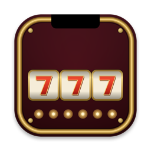
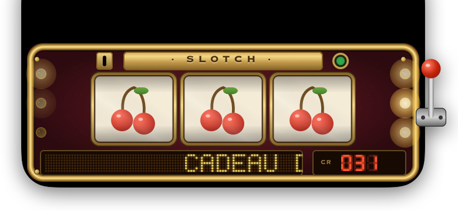

Le Bandit à Encoche.
A slot machine hiding behind your Mac's notch — FR · EN
brew install --cask REMPLACER_USER/tap/slotch

Cadre laiton riveté, rouleaux ivoire sous verre bombé, ticker LED 5×7, compteur 7 segments. Chaque symbole est tracé en Core Graphics — zéro emoji, zéro image importée.
Il te nargue en français ou en anglais, offre le premier tirage, truque des near-miss pour le drame, et craque avant toi si la chance t'abandonne trop longtemps.
20 crédits offerts, −1 par tirage, +77 le jackpot. Fauché ? La maison régale. Aucun vrai argent, aucune pub, aucun compte — juste ta pause café.
| 7 · 7 · 7 | Jackpot — explosion dorée, pluie de pièces, lettres de marquise |
| CERISES ×3 | Pluie de cerises sur tout l'écran |
| CLOCHE ×3 | Ding ding ding — ondes dorées et carillon |
| BAR ×3 | Pluie de lingots, lourde comme il se doit |
| DIAMANT ×3 | Scintillements et rai de lumière |
| FER ×3 | La veine verte |
| 7 · 7 · ✗ | Near-miss. Flash rouge. Douleur. |